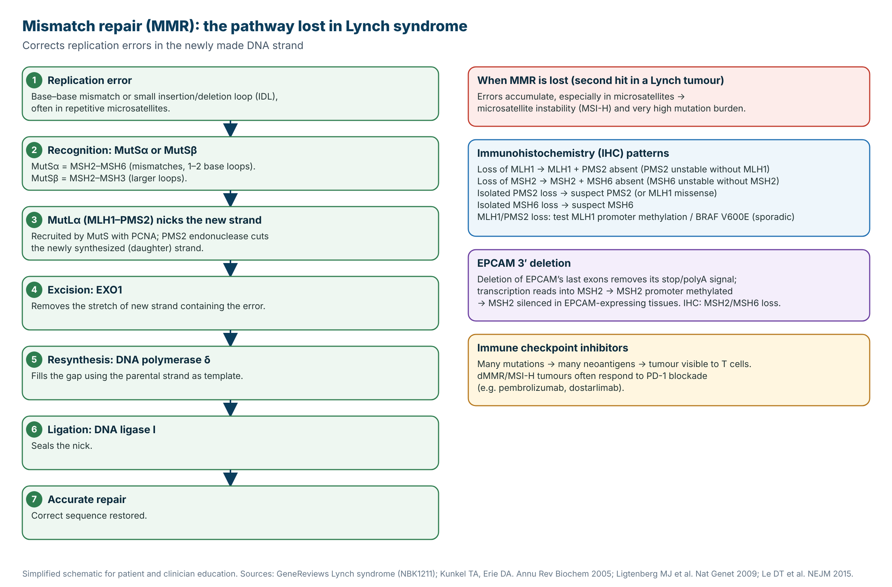
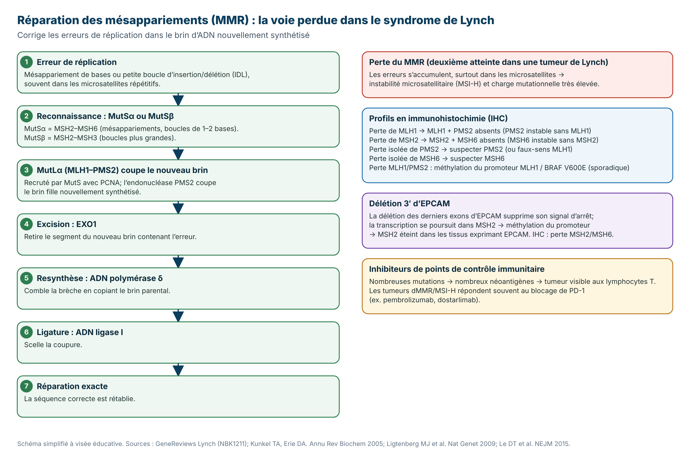

Clinical Prevention Protocol
A practical, evidence-based protocol for gene-specific screening, chemoprevention, risk-reducing surgery, and lifestyle risk reduction in MLH1-associated Lynch syndrome, written so clinicians and patients can read the same document.
What this means for you
MLH1 carries one of the highest cancer risks of the Lynch genes, most often of the bowel and womb, and tends to cause them at younger ages. Because of this, screening is the most intensive: the cornerstone is colonoscopy beginning in your early twenties, repeated every one to two years. A daily low-dose aspirin lowers risk for most people, and women plan risk-reducing gynaecologic surgery after childbearing. These steps lower risk substantially and catch anything early, when it is most treatable.
MLH1-associated Lynch syndrome is a hereditary cancer predisposition caused by a germline pathogenic variant in MLH1, one of the DNA mismatch repair (MMR) genes. The MMR system corrects base mismatches and insertion-deletion loops arising during DNA replication. When MLH1 function is lost, errors accumulate in repetitive microsatellite sequences, producing microsatellite instability (MSI) and driving carcinogenesis. Inheritance is autosomal dominant.
MLH1 sits in the highest-risk tier alongside MSH2, with high colorectal and endometrial risk and meaningful ovarian, gastric, small-bowel, hepatobiliary, pancreatic, and brain risk. Stomach cancer risk is particularly notable in MLH1 carriers. Median age at colorectal cancer onset is earlier than in MSH6 or PMS2 carriers, which is why surveillance starts in the early twenties.
What this means for you
Your cells copy their DNA every time they divide, and small copying mistakes happen. The mismatch repair (MMR) system is a proofreading team that finds and fixes these mistakes. In Lynch syndrome you are born with one non-working copy of an MMR gene; your cells still repair DNA normally using the other copy. Cancer risk rises when a cell also loses that second copy: mistakes then pile up quickly, especially in repetitive stretches of DNA, and this can lead to cancer, most often in the bowel or the womb (endometrium).
What MMR does. After DNA replication, MMR corrects base–base mismatches and small insertion–deletion loops in the newly synthesized strand. MutSα (MSH2–MSH6) recognizes single mismatches and small loops; MutSβ (MSH2–MSH3) recognizes larger loops. MutS then recruits MutLα (MLH1–PMS2), whose PMS2 endonuclease nicks the new strand; EXO1 excises the error-containing segment, DNA polymerase δ resynthesizes it using the parental strand, and DNA ligase I seals the nick.
Partner instability and IHC. MSH6 and PMS2 are unstable without their obligate partners. Loss of MSH2 therefore removes MSH2 and MSH6; loss of MLH1 removes MLH1 and PMS2; loss of MSH6 or PMS2 alone gives isolated loss of that protein. These patterns guide which gene to test.
From loss of MMR to cancer. Carriers have one germline pathogenic variant; tumours arise after a somatic second hit (mutation, loss of heterozygosity or methylation) in a cell. MMR-deficient cells accumulate errors, particularly length changes in short repeats (microsatellite instability, MSI-high) and a very high mutation burden (hypermutation), which drives colorectal, endometrial and other Lynch-associated cancers (ovarian, gastric, small bowel, urothelial, hepatobiliary, pancreatic). The resulting neoantigens also explain why dMMR/MSI-high tumours often respond to PD-1 immune checkpoint blockade.
Why this matters for MLH1: MLH1 is the obligate partner of PMS2 in MutLα. When MLH1 is lost, PMS2 is unstable and degraded too, so the tumour typically shows loss of both MLH1 and PMS2 on IHC. The same MLH1/PMS2 pattern is common in sporadic tumours caused by MLH1 promoter hypermethylation (often with BRAF V600E in colorectal cancer), so methylation/BRAF testing helps separate sporadic from Lynch-related loss before germline testing.

Sources: GeneReviews®, Lynch Syndrome (NBK1211); Peltomäki P. Update on Lynch syndrome genomics. Fam Cancer 2016;15:385–93 (doi); Kunkel TA, Erie DA. DNA mismatch repair. Annu Rev Biochem 2005;74:681–710 (PubMed); Le DT, et al. N Engl J Med 2015;372:2509–20 (PubMed).
How to read this
These are lifetime estimates for this gene, not a prediction that cancer will happen. Higher numbers mean screening matters more for that organ. Your own risk also depends on your family history and the prevention steps you take.
| Cancer type | Approx. lifetime risk |
|---|---|
| Colorectal (CRC) | 40–60% |
| Endometrial (uterine) | 35–55% |
| Ovarian | 4–20% |
| Stomach | 5–7% |
| Small intestine | ~4–11% |
| Hepatobiliary tract | ~2–4% |
| Urinary tract | 0.2–4% |
| Pancreas | ~1–6% |
| Brain (glioblastoma) | ~1–4% |
Highest-risk group, alongside MSH2
CRC 40–60% · Endometrial 35–55%Your screening at a glance
MLH1 carries one of the highest cancer risks of the Lynch genes, most often of the bowel and womb, and tends to cause them at younger ages. Because of this, screening is the most intensive: the cornerstone is colonoscopy beginning in your early twenties, repeated every one to two years. A daily low-dose aspirin lowers risk for most people, and women plan risk-reducing gynaecologic surgery after childbearing. These steps lower risk substantially and catch anything early, when it is most treatable.
Surgery and hormones, together
For women with Lynch syndrome, removing the uterus and (where indicated) the ovaries after childbearing is the most effective way to prevent womb and ovarian cancer. If the ovaries are removed before natural menopause, hormone replacement therapy protects the heart, bones, and quality of life, and reassuringly does not raise bowel cancer risk in Lynch syndrome. These two decisions are planned together.
Risk-reducing hysterectomy with bilateral salpingo-oophorectomy (BSO) is the most effective intervention against endometrial and ovarian cancer in Lynch syndrome, and unlike surveillance it has a clear preventive effect. Timing and strength of recommendation are gene-dependent.
Premature estrogen loss after BSO before natural menopause increases cardiovascular disease, osteoporosis, cognitive decline, and quality-of-life burden. Current evidence indicates HRT does not increase colorectal cancer risk (the primary Lynch-associated cancer) and may be protective. Estrogen-alone therapy is preferred after hysterectomy; combined estrogen-progestin is needed only if a uterus remains. HRT is individualized by age, time since surgery, and personal and family cancer history.
A daily tablet that lowers risk
A low daily dose of aspirin reduces bowel cancer risk in Lynch syndrome across all the genes, including MLH1. It is not right for everyone: the main trade-off is a small increase in bleeding risk, so your clinician weighs the benefit against your personal bleeding risk before recommending it, and reviews it each year.
Aspirin reduces colorectal cancer risk chiefly through inhibition of cyclooxygenase (COX) enzymes, particularly COX-2. The CAPP2 trial showed that aspirin lowers the incidence of colorectal and other Lynch-associated cancers, an effect that emerged about 5 years from commencement and persisted for over a decade. The CaPP3 non-inferiority trial (reported 2025) compared 75–100 mg, 300 mg, and 600 mg daily and found the lowest dose as effective with fewer bleeding and gastrointestinal events. Low-dose aspirin is therefore the preferred chemopreventive dose. Risk–benefit evaluation is essential before initiating, particularly for gastrointestinal bleeding.
What this means for your family
MLH1-related Lynch syndrome is passed down in an autosomal dominant pattern, so each of your first-degree relatives (parents, siblings, children) has a 50% chance of carrying the same variant. Sharing this result lets relatives decide about their own testing and screening. Genetic counselling supports these conversations and reproductive choices.
Inheritance is autosomal dominant; first-degree relatives have a 50% prior probability of carrying the familial MLH1 variant. Recommend cascade testing of at-risk relatives, predictive testing with pre- and post-test counselling, and a three-generation pedigree to refine personal and family risk. Discuss reproductive options where relevant, including prenatal diagnosis and preimplantation genetic testing for monogenic conditions (PGT-M). For genes where biallelic inheritance causes a severe recessive condition (notably PMS2 and, less commonly, the other MMR genes), counsel carrier couples about constitutional mismatch repair deficiency (CMMRD) risk in offspring. Genetic counselling is delivered per CCMG/CAGC standards.
Everyday habits that help
Daily choices add up. Not smoking, limiting alcohol, staying active, keeping a healthy weight, and eating plenty of fibre, vegetables, and whole grains all lower cancer risk and support your screening plan.
Gene-specific schedule for MLH1. See the surveillance section for organ-by-organ start ages and intervals, marked routine or optional.
Consider low-dose aspirin (81 mg in Canada). Reassess bleeding risk at least annually.
Gynaecologic risk-reducing surgery and HRT planned together where indicated for this gene.
Autosomal dominant; 50% risk to first-degree relatives. Recommend cascade testing and genetic counselling.
Protocole clinique de prévention
Un protocole pratique et fondé sur les données pour le dépistage spécifique au gène, la chimioprévention, la chirurgie de réduction du risque et la réduction du risque par le mode de vie dans le syndrome de Lynch lié à MLH1, rédigé pour que cliniciens et patients lisent le même document.
Ce que cela signifie pour vous
MLH1 comporte l'un des risques de cancer les plus élevés parmi les gènes de Lynch, surtout au niveau de l'intestin et de l'utérus, et tend à les provoquer plus jeune. La surveillance est donc la plus intensive : la pierre angulaire est la coloscopie débutée au début de la vingtaine, répétée tous les un à deux ans. Une faible dose quotidienne d'aspirine réduit le risque chez la plupart des gens, et les femmes planifient une chirurgie gynécologique de réduction du risque après la grossesse. Ces mesures réduisent nettement le risque et permettent de détecter tôt, lorsque c'est le plus traitable.
Le syndrome de Lynch lié à MLH1 est une prédisposition héréditaire au cancer causée par un variant pathogène germinal de MLH1, l'un des gènes de réparation des mésappariements de l'ADN (MMR). Le système MMR corrige les mésappariements de bases et les boucles d'insertion-délétion survenant lors de la réplication. Lorsque la fonction de MLH1 est perdue, les erreurs s'accumulent dans les séquences microsatellites répétitives, produisant une instabilité des microsatellites (MSI) et favorisant la cancérogenèse. La transmission est autosomique dominante.
MLH1 se situe dans le groupe à risque le plus élevé avec MSH2, avec un risque colorectal et endométrial élevé et un risque appréciable ovarien, gastrique, intestinal grêle, hépatobiliaire, pancréatique et cérébral. Le risque de cancer de l'estomac est particulièrement notable chez les porteurs de MLH1. L'âge médian d'apparition du cancer colorectal est plus précoce que chez les porteurs de MSH6 ou PMS2, d'où le début de la surveillance au début de la vingtaine.
Ce que cela signifie pour vous
Vos cellules copient leur ADN à chaque division, et de petites erreurs de copie surviennent. Le système de réparation des mésappariements (MMR) est une équipe de correction qui repère et répare ces erreurs. Dans le syndrome de Lynch, vous naissez avec une copie non fonctionnelle d’un gène MMR; vos cellules réparent encore l’ADN normalement grâce à l’autre copie. Le risque de cancer augmente quand une cellule perd aussi cette deuxième copie : les erreurs s’accumulent alors rapidement, surtout dans les segments répétitifs de l’ADN, ce qui peut mener à un cancer, le plus souvent de l’intestin ou de l’utérus (endomètre).
Rôle du MMR. Après la réplication, le MMR corrige les mésappariements de bases et les petites boucles d’insertion–délétion dans le brin nouvellement synthétisé. MutSα (MSH2–MSH6) reconnaît les mésappariements simples et les petites boucles; MutSβ (MSH2–MSH3) reconnaît les boucles plus grandes. MutS recrute ensuite MutLα (MLH1–PMS2), dont l’endonucléase PMS2 coupe le nouveau brin; EXO1 retire le segment contenant l’erreur, l’ADN polymérase δ le resynthétise à partir du brin parental et l’ADN ligase I scelle la coupure.
Instabilité des partenaires et IHC. MSH6 et PMS2 sont instables sans leurs partenaires obligatoires. La perte de MSH2 entraîne donc la disparition de MSH2 et de MSH6; la perte de MLH1, celle de MLH1 et de PMS2; la perte de MSH6 ou de PMS2 seule donne une perte isolée de cette protéine. Ces profils orientent le choix du gène à analyser.
De la perte du MMR au cancer. Les porteurs ont un variant pathogène germinal; les tumeurs apparaissent après une deuxième atteinte somatique (mutation, perte d’hétérozygotie ou méthylation) dans une cellule. Les cellules déficientes en MMR accumulent des erreurs, en particulier des changements de longueur dans les courtes répétitions (instabilité microsatellitaire, MSI élevé) et une charge mutationnelle très élevée (hypermutation), ce qui favorise les cancers colorectaux, de l’endomètre et les autres cancers du spectre de Lynch (ovaire, estomac, intestin grêle, voies urinaires, voies biliaires, pancréas). Les néoantigènes qui en résultent expliquent aussi pourquoi les tumeurs dMMR/MSI élevé répondent souvent au blocage du point de contrôle PD-1.
Pourquoi c’est important pour MLH1 : MLH1 est le partenaire obligatoire de PMS2 dans MutLα. Quand MLH1 est perdu, PMS2 devient instable et est dégradé, de sorte que la tumeur montre habituellement une perte de MLH1 et de PMS2 en IHC. Ce même profil MLH1/PMS2 est fréquent dans les tumeurs sporadiques dues à une hyperméthylation du promoteur de MLH1 (souvent avec BRAF V600E dans le cancer colorectal); la recherche de méthylation/BRAF aide donc à distinguer une perte sporadique d’une perte liée au syndrome de Lynch avant le test germinal.

Sources : GeneReviews®, Lynch Syndrome (NBK1211); Peltomäki P. Update on Lynch syndrome genomics. Fam Cancer 2016;15:385–93 (doi); Kunkel TA, Erie DA. DNA mismatch repair. Annu Rev Biochem 2005;74:681–710 (PubMed); Le DT, et al. N Engl J Med 2015;372:2509–20 (PubMed).
Comment lire ceci
Ce sont des estimations à vie pour ce gène, et non une prédiction qu'un cancer surviendra. Des chiffres plus élevés signifient que le dépistage compte davantage pour cet organe. Votre risque dépend aussi de vos antécédents familiaux et des mesures de prévention prises.
| Type de cancer | Risque à vie approx. |
|---|---|
| Cancer colorectal (CCR) | 40–60% |
| Endomètre (utérus) | 35–55% |
| Ovaire | 4–20% |
| Estomac | 5–7% |
| Intestin grêle | ~4–11% |
| Voies hépatobiliaires | ~2–4% |
| Voies urinaires | 0.2–4% |
| Pancréas | ~1–6% |
| Cerveau (glioblastome) | ~1–4% |
Groupe à risque le plus élevé, avec MSH2
CCR 40–60 % · Endomètre 35–55 %Votre dépistage en un coup d'œil
MLH1 comporte l'un des risques de cancer les plus élevés parmi les gènes de Lynch, surtout au niveau de l'intestin et de l'utérus, et tend à les provoquer plus jeune. La surveillance est donc la plus intensive : la pierre angulaire est la coloscopie débutée au début de la vingtaine, répétée tous les un à deux ans. Une faible dose quotidienne d'aspirine réduit le risque chez la plupart des gens, et les femmes planifient une chirurgie gynécologique de réduction du risque après la grossesse. Ces mesures réduisent nettement le risque et permettent de détecter tôt, lorsque c'est le plus traitable.
Chirurgie et hormones, ensemble
Pour les femmes atteintes du syndrome de Lynch, retirer l'utérus et (au besoin) les ovaires après la grossesse est le moyen le plus efficace de prévenir le cancer de l'utérus et de l'ovaire. Si les ovaires sont retirés avant la ménopause naturelle, l'hormonothérapie substitutive protège le cœur, les os et la qualité de vie, et n'augmente pas le risque de cancer de l'intestin dans le syndrome de Lynch. Ces deux décisions se planifient ensemble.
L'hystérectomie de réduction du risque avec salpingo-ovariectomie bilatérale (SOB) est l'intervention la plus efficace contre le cancer de l'endomètre et de l'ovaire dans le syndrome de Lynch et, contrairement à la surveillance, a un effet préventif clair. Le moment et la force de la recommandation dépendent du gène.
La perte précoce d'estrogènes après une SOB avant la ménopause naturelle augmente les maladies cardiovasculaires, l'ostéoporose, le déclin cognitif et le fardeau sur la qualité de vie. Les données actuelles indiquent que l'HTS n'augmente pas le risque de cancer colorectal (le principal cancer associé à Lynch) et pourrait être protectrice. L'estrogénothérapie seule est préférée après hystérectomie; l'association estrogène-progestatif n'est nécessaire qu'en présence d'un utérus. L'HTS est individualisée selon l'âge, le temps écoulé depuis la chirurgie et les antécédents personnels et familiaux.
Un comprimé quotidien qui réduit le risque
Une faible dose quotidienne d'aspirine réduit le risque de cancer de l'intestin dans le syndrome de Lynch pour tous les gènes, y compris MLH1. Elle ne convient pas à tout le monde : le principal compromis est une légère augmentation du risque de saignement, de sorte que votre clinicien soupèse le bénéfice par rapport à votre risque de saignement personnel avant de la recommander, et la réévalue chaque année.
L'aspirine réduit le risque de cancer colorectal principalement par l'inhibition des enzymes cyclooxygénases (COX), en particulier COX-2. L'essai CAPP2 a montré que l'aspirine diminue l'incidence des cancers colorectaux et autres cancers associés à Lynch, un effet apparu environ 5 ans après le début et persistant plus d'une décennie. L'essai de non-infériorité CaPP3 (rapporté en 2025) a comparé 75–100 mg, 300 mg et 600 mg par jour et a constaté que la dose la plus faible était aussi efficace avec moins d'événements hémorragiques et gastro-intestinaux. La faible dose d'aspirine est donc la dose chimiopréventive préférée. L'évaluation bénéfice–risque est essentielle avant l'instauration, en particulier pour les saignements gastro-intestinaux.
Ce que cela signifie pour votre famille
Le syndrome de Lynch lié à MLH1 se transmet selon un mode autosomique dominant, de sorte que chacun de vos parents au premier degré (parents, frères et sœurs, enfants) a 50 % de risque de porter le même variant. Partager ce résultat permet aux proches de décider de leur propre dépistage. Le conseil génétique soutient ces conversations et les choix reproductifs.
La transmission est autosomique dominante; les parents au premier degré ont une probabilité a priori de 50 % de porter le variant familial de MLH1. Recommander le dépistage en cascade des proches à risque, le test prédictif avec conseil pré- et post-test, et un arbre généalogique sur trois générations pour préciser le risque personnel et familial. Discuter des options reproductives au besoin, y compris le diagnostic prénatal et le test génétique préimplantatoire pour les affections monogéniques (DPI-M). Pour les gènes où la transmission biallélique cause une affection récessive sévère (notamment PMS2 et, plus rarement, les autres gènes MMR), conseiller les couples porteurs sur le risque de déficit constitutionnel en réparation des mésappariements (CMMRD) chez la descendance. Le conseil génétique est offert selon les normes du CCGM/ACCG.
Des habitudes quotidiennes qui aident
Les choix quotidiens comptent. Ne pas fumer, limiter l'alcool, rester actif, maintenir un poids santé et consommer beaucoup de fibres, de légumes et de grains entiers réduisent tous le risque de cancer et soutiennent votre plan de dépistage.
Calendrier spécifique au gène MLH1. Voir la section surveillance pour les âges de début et intervalles organe par organe, marqués de routine ou facultatifs.
Envisager une faible dose d'aspirine (81 mg au Canada). Réévaluer le risque de saignement au moins annuellement.
Chirurgie gynécologique de réduction du risque et HTS planifiées ensemble lorsqu'indiqué pour ce gène.
Autosomique dominant; 50 % de risque pour les parents au premier degré. Recommander le dépistage en cascade et le conseil génétique.